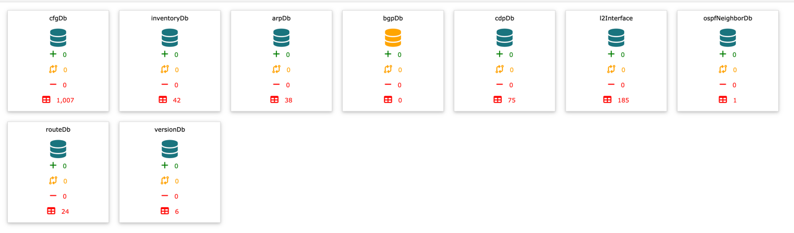
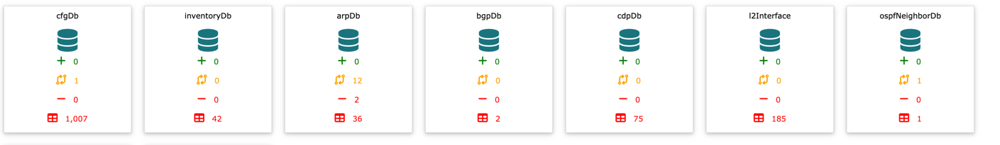
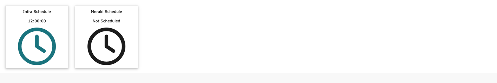
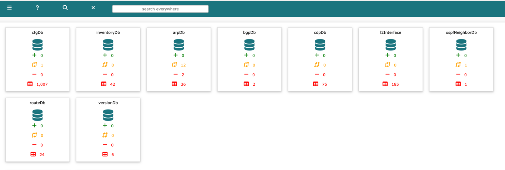

diff updated, since the last scheduled collection or if scheduling is disabled, midnight UTC
diff updated, since the last scheduled collection or if scheduling is disabled, midnight UTC total number of rows present in table
total number of rows present in tableEach time a new DataBase table is create, a new panel will be displayed on the dashboard.
Panels are colour coded

Note: bgpDb is waiting for the collection process to start
diff updated, since the last scheduled collection or if scheduling is disabled, midnight UTC total number of rows present in table
techTip: each panel is hyperlinked, click on the database to be redirected to the table

The Scheduling panels display the next collection time.
Embedded in the top navigation bar, there is a search anywhere input. Use this to perform a quick search across all databases.

Once ready, click

To close and return to the dashboard, click